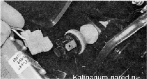
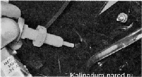

Выключатель сигналов торможения снятие и установкаВыключатель сигналов торможения установлен под панелью приборов на кронштейне педали тормоза. Снятие 1. Подготавливаем автомобиль к выполнению работы. 2. Отсоединяем наконечники двух проводов от выводов выключателя. 3. Рожковым ключом на 19 мм ослабляем затяжку контргайки выключателя. Выворачиваем выключатель из кронштейна педали. Проверить исправность выключателя можно омметром или с использованием контрольной лампы. Когда кнопка находится в свободном положении, контакты выключателя должны быть замкнуты, а при нажатии кнопки — разомкнуться. Неисправный выключатель необходимо заменить. Установка 1. Устанавливаем выключатель сигнала торможения в обратной последовательности. 2. После установки выключателя, перед подсоединением разъемов проводов, проверяем и при необходимости регулируем положение педали тормоза. Подсоединив провода, убедитесь в том, что при легком нажатии педали тормоза включаются сигналы торможения. В противном случае проверьте подсоединение проводов к выводам выключателя или повторите регулировку. |